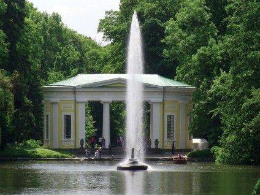
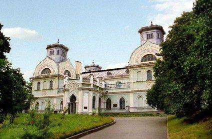
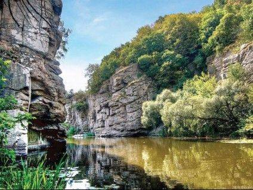
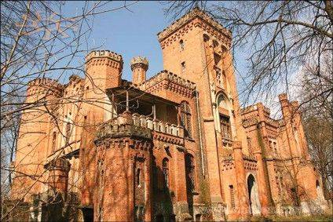
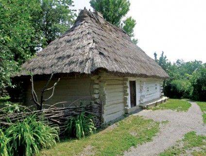

Several famous places of the Cherkasy region

National Dendrological Park "Sophiivka", Uman

Palace of the Lopukhin-Demidov princes, Korsun-Shevchenkivskyi

Butsky canyon, village Buki, Mankivskyi district

Count Shuvalov's Hunting Palace, Talne

Dakhovsky estates, Leskove village, Monastyryshchenskyi district
